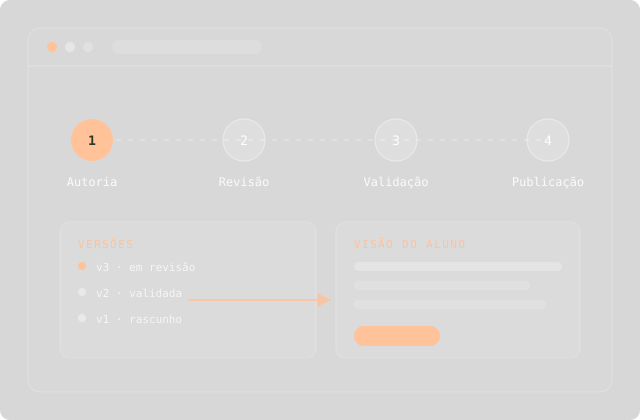

Destaque · Sistema próprio
SENAI Bahia
FLOW — Sistema de Autoria e Gestão de Conteúdo
Plataforma de autoria e gestão de conteúdo educacional criada para centralizar e otimizar a produção dos cursos EAD do SENAI Bahia. Reúne conteudistas, designers instrucionais e revisores em um único fluxo de trabalho, com versionamento, validação, simulação em tempo real da experiência do aluno e recursos de inteligência artificial.
Ver o case completo